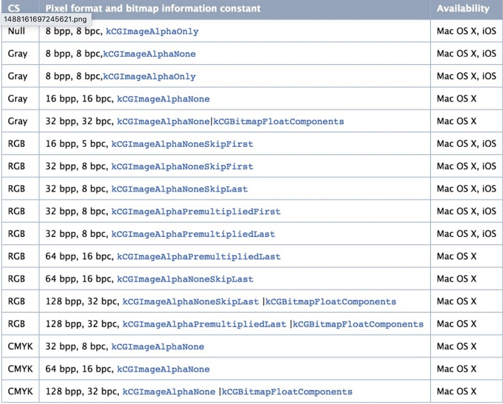

从磁盘加载一张照片，并且将其显示到屏幕上，需要的工作流如下:
- 假设适应+imageWithContentFile：从磁盘加载一张照片，这是图片还没有解压缩
- 将生成的UIImage赋值给UIImageView
- 一个隐式的CATransaction捕获到了UIImageView图层树的变化
- 主线程的下一个runloop 到来时，CoreAnimation提交这个隐式的transaction。这个过程可能对图片执行copy操作，而受图片是否字节对齐等因素的影响，这个copy操作会涉及以下部分或全部步骤:
- 分配内存缓冲区用于管理文件IO和解压缩操作
- 将文件数据从磁盘读到内存中
- 将压缩的图片数据解码成未压缩的位图形式，这是非常耗时的cpu操作
- 最后
Core Animation使用未压缩的位图数据渲染UIImageView图层
图片解压缩是一个非常耗时的CPU操作，并且默认是在主线程中执行的。当在主线程需要加载图片较多时，就会对应用响应性造成严重影响，尤其在快速滑动的列表中
图片的解压缩
图片是无法直接显示到屏幕上，需要转换为位图。位图就是一个像素数组，没个像素就代表图片中的一个点。
解压缩后的图片大小与原始文件是大小之间没有任何关系，而只与图片的像素有关
解压缩后的图片大小 = 图片的像素宽 * 图片的像素高 * 每个像素所占的字节数 4
不论是JPEG还是PNG图片都是压缩的位图形式，只不过PNG是无损压缩并且支持alpha听到，而JPEG图片是有损压缩，可以指定0-100%的压缩比。
因此，将磁盘中的图片渲染到屏幕上之前，必须得到图片的原始像素数据，才能执行后续绘制操作，也就是必须解压缩之后才能渲染了
强制解压缩
为了不在主线程解压缩，影响性能，我们可以在子线程提前对图片进行解压缩，图片已经解压缩再渲染是，系统就不会图片再执行解压缩了
强制解压缩的原理就是对图片进行重新绘制，得到新的解压缩后的位图，用到最核心的就是CGBitmapContextCreat
CG_EXTERN CGContextRef __nullable CGBitmapContextCreate(void * __nullable data,
size_t width, size_t height, size_t bitsPerComponent, size_t bytesPerRow,
CGColorSpaceRef cg_nullable space, uint32_t bitmapInfo)
CG_AVAILABLE_STARTING(__MAC_10_0, __IPHONE_2_0);
pixel Format
位图是一个像素数组，而像素格式则是用来描述每个像素的组成格式，它包括了:
Bits per component：一个像素中每个独立的颜色分量使用的 bit 数；
Bits per pixel: 像素深度: 存储每个像素所用的位数，也可以用它度量图像的分辨率
Bytes per row: 位图中每一行使用的字节数
对于位图来说，像素格式并不是随意组合的，目前只有一下17种特定组合:

而iOS只支持其中的8中像素格式。颜色空间为Null的1种，Gary的2种，RGB的5种，即iOS不支持CMYK颜色空间。
颜色空间
颜色空间用来使用一组值表示颜色。比如：0、0、1在RGB下表示蓝色，在brg下表示红色等。
.
.
.
.